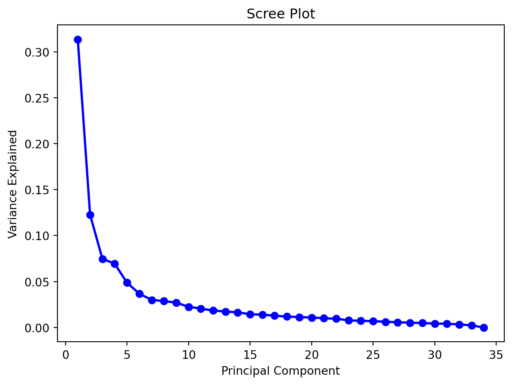
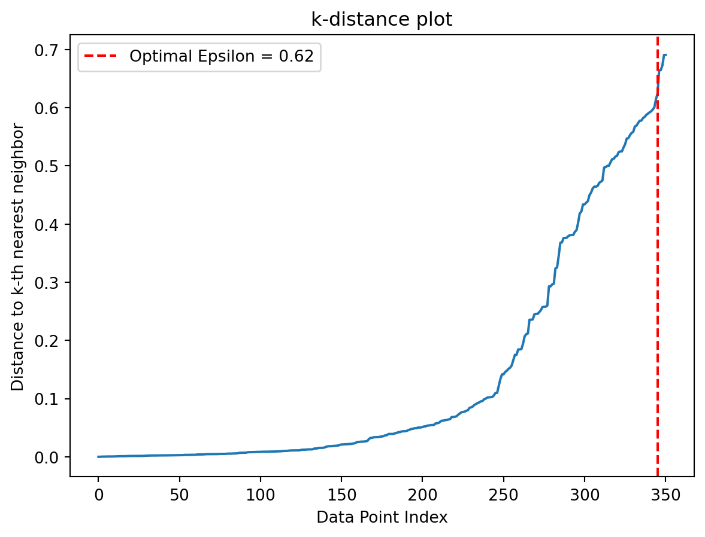
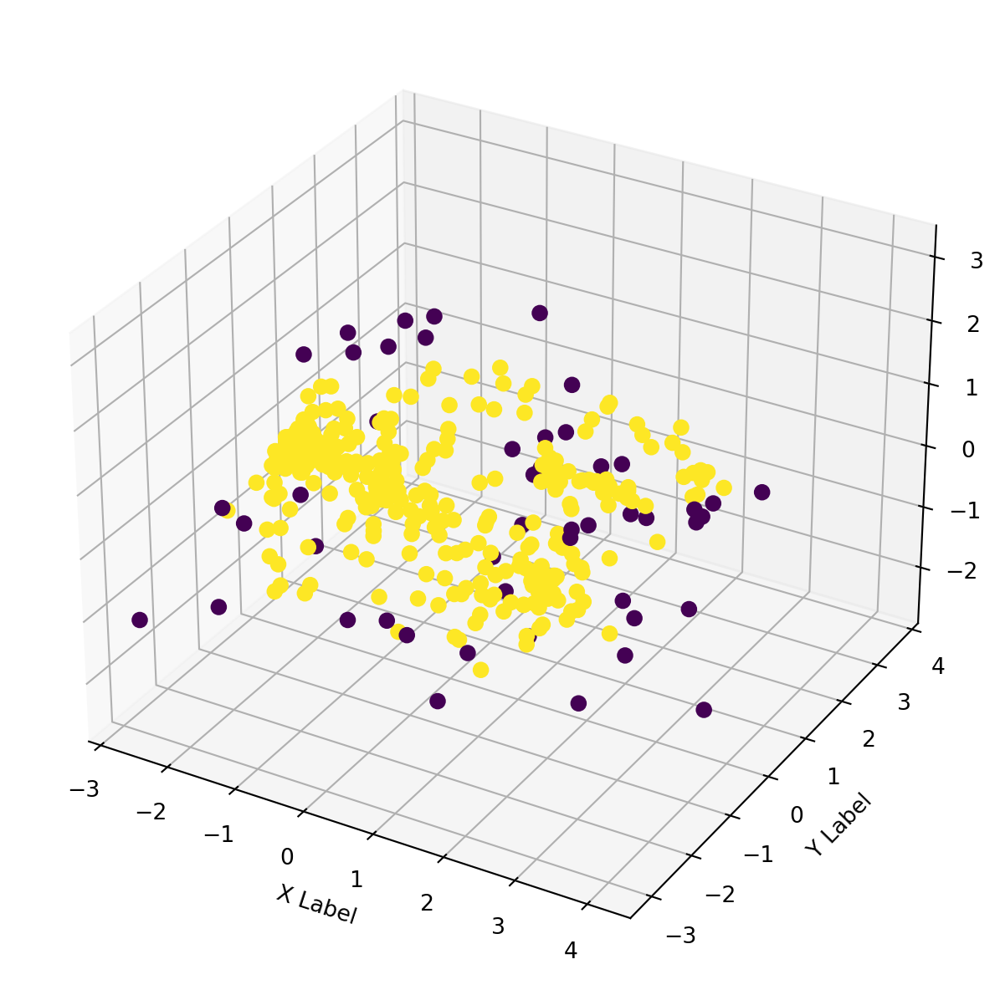

Unsupervised Learning in artificial intelligence is a type of machine learning that learns from data without human supervision. Unlike supervised learning, unsupervised machine learning models are given unlabeled data and allowed to discover patterns and insights without any explicit guidance or instruction.
Clustering is an unsupervised machine learning technique. Clustering is the process of building groups of data points in a way that the data in the same group are more similar to one another than to those in other groups. Clustering algorithms include agglomerative clustering, Gaussian mixtures for clustering, K-Means clustering, hierarchial clustering, DBSCAN, and much more.
Anomaly Detection is a use case of the clustering algorithm to identify noise, exceptions, or outliers in the data which deviate significantly from standard behaviors or patterns. Density based clustering algorithms are especially useful in anomaly detection. DBSCAN (Density-Based Spatial Clustering of Applications with Noise) is one such algorithm which is popularly used in anomaly detection.
Unlike methods that rely on distance thresholds (like in some distance-based clustering), DBSCAN automatically detects outliers without requiring a predefined distance threshold. It adapts to the local density of the data, making it robust to variations in the density of clusters. DBSCAN can scale to large datasets well and can handle clusters of arbitrary shapes, making it suitable for datasets where outliers might be located in regions with irregular shapes or non-uniform density.
In this blog, we analyze the ionosphere dataset from the UCI Machine Learning Repository to identify the “Bad” radars from the dataset.
“This radar data was collected by a system in Goose Bay, Labrador. This system consists of a phased array of 16 high-frequency antennas with a total transmitted power on the order of 6.4 kilowatts. See the paper for more details. The targets were free electrons in the ionosphere.”Good” radar returns are those showing evidence of some type of structure in the ionosphere. “Bad” returns are those that do not; their signals pass through the ionosphere.” As can be seen from the tabe, the data has already been normalized.
Code
from ucimlrepo import fetch_ucirepo import pandas as pdimport warningswarnings.filterwarnings("ignore")# fetch dataset ionosphere = fetch_ucirepo(id=52) # data (as pandas dataframes) X = ionosphere.data.features y = ionosphere.data.targets # metadata print(ionosphere.metadata) # variable information print(ionosphere.variables)
{'uci_id': 52, 'name': 'Ionosphere', 'repository_url': 'https://archive.ics.uci.edu/dataset/52/ionosphere', 'data_url': 'https://archive.ics.uci.edu/static/public/52/data.csv', 'abstract': 'Classification of radar returns from the ionosphere', 'area': 'Physics and Chemistry', 'tasks': ['Classification'], 'characteristics': ['Multivariate'], 'num_instances': 351, 'num_features': 34, 'feature_types': ['Integer', 'Real'], 'demographics': [], 'target_col': ['Class'], 'index_col': None, 'has_missing_values': 'no', 'missing_values_symbol': None, 'year_of_dataset_creation': 1989, 'last_updated': 'Sun Jan 01 1989', 'dataset_doi': '10.24432/C5W01B', 'creators': ['V. Sigillito', 'S. Wing', 'L. Hutton', 'K. Baker'], 'intro_paper': None, 'additional_info': {'summary': 'This radar data was collected by a system in Goose Bay, Labrador. This system consists of a phased array of 16 high-frequency antennas with a total transmitted power on the order of 6.4 kilowatts. See the paper for more details. The targets were free electrons in the ionosphere. "Good" radar returns are those showing evidence of some type of structure in the ionosphere. "Bad" returns are those that do not; their signals pass through the ionosphere. \r\n\r\nReceived signals were processed using an autocorrelation function whose arguments are the time of a pulse and the pulse number. There were 17 pulse numbers for the Goose Bay system. Instances in this databse are described by 2 attributes per pulse number, corresponding to the complex values returned by the function resulting from the complex electromagnetic signal.', 'purpose': None, 'funded_by': None, 'instances_represent': None, 'recommended_data_splits': None, 'sensitive_data': None, 'preprocessing_description': None, 'variable_info': '-- All 34 are continuous\r\n-- The 35th attribute is either "good" or "bad" according to the definition summarized above. This is a binary classification task.\r\n', 'citation': None}}
name role type demographic description units \
0 Attribute1 Feature Continuous None None None
1 Attribute2 Feature Continuous None None None
2 Attribute3 Feature Continuous None None None
3 Attribute4 Feature Continuous None None None
4 Attribute5 Feature Continuous None None None
5 Attribute6 Feature Continuous None None None
6 Attribute7 Feature Continuous None None None
7 Attribute8 Feature Continuous None None None
8 Attribute9 Feature Continuous None None None
9 Attribute10 Feature Continuous None None None
10 Attribute11 Feature Continuous None None None
11 Attribute12 Feature Continuous None None None
12 Attribute13 Feature Continuous None None None
13 Attribute14 Feature Continuous None None None
14 Attribute15 Feature Continuous None None None
15 Attribute16 Feature Continuous None None None
16 Attribute17 Feature Continuous None None None
17 Attribute18 Feature Continuous None None None
18 Attribute19 Feature Continuous None None None
19 Attribute20 Feature Continuous None None None
20 Attribute21 Feature Continuous None None None
21 Attribute22 Feature Continuous None None None
22 Attribute23 Feature Continuous None None None
23 Attribute24 Feature Continuous None None None
24 Attribute25 Feature Continuous None None None
25 Attribute26 Feature Continuous None None None
26 Attribute27 Feature Continuous None None None
27 Attribute28 Feature Continuous None None None
28 Attribute29 Feature Continuous None None None
29 Attribute30 Feature Continuous None None None
30 Attribute31 Feature Continuous None None None
31 Attribute32 Feature Continuous None None None
32 Attribute33 Feature Continuous None None None
33 Attribute34 Feature Continuous None None None
34 Class Target Categorical None None None
missing_values
0 no
1 no
2 no
3 no
4 no
5 no
6 no
7 no
8 no
9 no
10 no
11 no
12 no
13 no
14 no
15 no
16 no
17 no
18 no
19 no
20 no
21 no
22 no
23 no
24 no
25 no
26 no
27 no
28 no
29 no
30 no
31 no
32 no
33 no
34 no
Attribute1
Attribute2
Attribute3
Attribute4
Attribute5
Attribute6
Attribute7
Attribute8
Attribute9
Attribute10
...
Attribute25
Attribute26
Attribute27
Attribute28
Attribute29
Attribute30
Attribute31
Attribute32
Attribute33
Attribute34
0
1
0
0.99539
-0.05889
0.85243
0.02306
0.83398
-0.37708
1.00000
0.03760
...
0.56811
-0.51171
0.41078
-0.46168
0.21266
-0.34090
0.42267
-0.54487
0.18641
-0.45300
1
1
0
1.00000
-0.18829
0.93035
-0.36156
-0.10868
-0.93597
1.00000
-0.04549
...
-0.20332
-0.26569
-0.20468
-0.18401
-0.19040
-0.11593
-0.16626
-0.06288
-0.13738
-0.02447
2
1
0
1.00000
-0.03365
1.00000
0.00485
1.00000
-0.12062
0.88965
0.01198
...
0.57528
-0.40220
0.58984
-0.22145
0.43100
-0.17365
0.60436
-0.24180
0.56045
-0.38238
3
1
0
1.00000
-0.45161
1.00000
1.00000
0.71216
-1.00000
0.00000
0.00000
...
1.00000
0.90695
0.51613
1.00000
1.00000
-0.20099
0.25682
1.00000
-0.32382
1.00000
4
1
0
1.00000
-0.02401
0.94140
0.06531
0.92106
-0.23255
0.77152
-0.16399
...
0.03286
-0.65158
0.13290
-0.53206
0.02431
-0.62197
-0.05707
-0.59573
-0.04608
-0.65697
5 rows × 34 columns
Since the DBSCAN algorithm maps density based on a distance metric, the greater the number of dimensions, the harder it becomes for the algorithm to map the data points accurately. By applying Principal Component Analysis (PCA), we can reduce the number of dimensions. PCA transforms high-dimensional data into a lower-dimensional representation by identifying and emphasizing the principal components using statistical methods. By retaining only the most informative components, PCA simplifies data while preserving essential patterns.
By plotting a scree plot, we map the variance explained which helps determine the dimensions the final dataset can be reduced to without losing too much information. The “elbow” of the plot is usually considered the optimum value.
Code
from sklearn.decomposition import PCAimport matplotlib.pyplot as pltimport numpy as np#define PCA model to usepca = PCA(n_components=len(X.columns))#fit PCA model to datapca_fit = pca.fit(X)# scree plotPC_values = np.arange(pca.n_components_) +1plt.plot(PC_values, pca.explained_variance_ratio_, 'o-', linewidth=2, color='blue')plt.title('Scree Plot')plt.xlabel('Principal Component')plt.ylabel('Variance Explained')plt.show()

We can see from the above plot that we can reduce the 34 column dimension data by projecting it into a 3D space.
The DBSCAN algorithm is mainly based on a metric function (normally the Euclidean distance) and a radius, \({epsilon}\). Given a sample point, its boundary is checked for other samples. If it is surrounded by at least \(m\) minimum points, it becomes a core point. If the number of points are less than \(m\), the point is classified as a boundary point, and if there are no other data points around within \({epsilon}\) radius, it is considered a noise point.
DBSCAN working
It is important to understand the optimum epsilon \({epsilon}\) value for the best model performance to ensure that it does not classify data points with slight deviations from the normal to be considered noise (very low \({epsilon}\)) and so that it does not include data points that are noise to be normal (very large \({epsilon}\)).
Code
from sklearn.neighbors import NearestNeighborsnbrs = NearestNeighbors(n_neighbors=2, metric='cosine').fit(X)distances, indices = nbrs.kneighbors(X)distances = np.sort(distances, axis=0)distances = distances[:,1]# Plot the k-distance graphplt.plot(distances)plt.title('k-distance plot')plt.xlabel('Data Point Index')plt.ylabel('Distance to k-th nearest neighbor')# Find the optimal epsilon (knee point)knee_point_index = np.argmax(np.diff(distances)) # Find the index with the maximum difference in distancesepsilon = distances[knee_point_index]plt.axvline(x=knee_point_index, color='r', linestyle='--', label=f'Optimal Epsilon = {epsilon:.2f}')plt.legend()# Show the plotplt.show()

We can identify the optimum epsilon value from the ‘knee point’ of this graph. You can read more about this here!
In the below code, we structure the data into 3D using PCA and initialize and fit the DBSCAN model on the transformed data with the optimum chosen epsilon value. The DBSCAN implementation is imported from the scikit-learn library.
Code
from sklearn.cluster import DBSCANimport collectionsprincipalComponents = PCA(n_components=3).fit_transform(X)principalDf = pd.DataFrame(data = principalComponents)# initialize DBSCAN and fit datacluster = DBSCAN(eps=epsilon).fit(principalDf)principalDf.columns=['PCA1','PCA2','PCA3']principalDfprint(collections.Counter(cluster.labels_))
Counter({0: 252, -1: 49, 1: 32, 2: 18})
After fitting the data, the data points have been assigned clusters as can be seen in the above output. The datapoints assigned to cluster ‘-1’ are considered to be the outlier points.
As can be seen from the 3D plot below, the outliers are low-density points.
Code
import seaborn as snsimport numpy as npfrom mpl_toolkits.mplot3d import Axes3Dfrom matplotlib.colors import ListedColormap# axes instancefig = plt.figure(figsize=(6,6))ax = Axes3D(fig, auto_add_to_figure=False)fig.add_axes(ax)# get colormap from seaborncmap = plt.cm.get_cmap('viridis', 2) x = principalDf['PCA1']y = principalDf['PCA2']z = principalDf['PCA3']# plotax.scatter(x, y, z, s=40, c=np.array(cluster.labels_)>-1, marker='o', cmap=cmap, alpha=1)ax.set_xlabel('X Label')ax.set_ylabel('Y Label')ax.set_zlabel('Z Label')plt.show()

We can also use the sns pairplot to visualize the distribution plots capturing relationship between the datapoints in each dimension . We can also visualize the representation of the outliers vs normal datapoints.
As we can see, DBSCAN has proven to be effective in separating outliers from the data and is effective in applications of cleaning datasets, fraud detection, outlier detection, etc.
Source Code
---title: "Anomaly Detection with DBSCAN"author: "Anushka S"date: "2023-12-03"categories: [Clustering, Unsupervised Learning, Machine Learning, DBSCAN, Anomaly Detection]---[Unsupervised Learning](https://cloud.google.com/discover/what-is-unsupervised-learning#:~:text=Unsupervised%20learning%20in%20artificial%20intelligence,any%20explicit%20guidance%20or%20instruction.) in artificial intelligence is a type of machine learning that learns from data without human supervision. Unlike supervised learning, unsupervised machine learning models are given unlabeled data and allowed to discover patterns and insights without any explicit guidance or instruction. Clustering is an unsupervised machine learning technique. Clustering is the process of building groups of data points in a way that the data in the same group are more similar to one another than to those in other groups. Clustering algorithms include agglomerative clustering, Gaussian mixtures for clustering, K-Means clustering, hierarchial clustering, DBSCAN, and much more. Anomaly Detection is a use case of the clustering algorithm to identify noise, exceptions, or outliers in the data which deviate significantly from standard behaviors or patterns. Density based clustering algorithms are especially useful in anomaly detection. DBSCAN (Density-Based Spatial Clustering of Applications with Noise) is one such algorithm which is popularly used in anomaly detection.Unlike methods that rely on distance thresholds (like in some distance-based clustering), DBSCAN automatically detects outliers without requiring a predefined distance threshold. It adapts to the local density of the data, making it robust to variations in the density of clusters. DBSCAN can scale to large datasets well and can handle clusters of arbitrary shapes, making it suitable for datasets where outliers might be located in regions with irregular shapes or non-uniform density.In this blog, we analyze the ionosphere dataset from the [UCI Machine Learning Repository](https://archive.ics.uci.edu/dataset/52/ionosphere) to identify the "Bad" radars from the dataset."This radar data was collected by a system in Goose Bay, Labrador. This system consists of a phased array of 16 high-frequency antennas with a total transmitted power on the order of 6.4 kilowatts. See the paper for more details. The targets were free electrons in the ionosphere. "Good" radar returns are those showing evidence of some type of structure in the ionosphere. "Bad" returns are those that do not; their signals pass through the ionosphere."As can be seen from the tabe, the data has already been normalized.```{python}from ucimlrepo import fetch_ucirepo import pandas as pdimport warningswarnings.filterwarnings("ignore")# fetch dataset ionosphere = fetch_ucirepo(id=52) # data (as pandas dataframes) X = ionosphere.data.features y = ionosphere.data.targets # metadata print(ionosphere.metadata) # variable information print(ionosphere.variables) ``````{python}#| echo: falseX.head(5) # already normalized between [-1,1] as seen```Since the DBSCAN algorithm maps density based on a distance metric, the greater the number of dimensions, the harder it becomes for the algorithm to map the data points accurately. By applying Principal Component Analysis (PCA), we can reduce the number of dimensions. PCA transforms high-dimensional data into a lower-dimensional representation by identifying and emphasizing the principal components using statistical methods. By retaining only the most informative components, PCA simplifies data while preserving essential patterns.By plotting a scree plot, we map the variance explained which helps determine the dimensions the final dataset can be reduced to without losing too much information. The "elbow" of the plot is usually considered the optimum value.```{python}from sklearn.decomposition import PCAimport matplotlib.pyplot as pltimport numpy as np#define PCA model to usepca = PCA(n_components=len(X.columns))#fit PCA model to datapca_fit = pca.fit(X)# scree plotPC_values = np.arange(pca.n_components_) +1plt.plot(PC_values, pca.explained_variance_ratio_, 'o-', linewidth=2, color='blue')plt.title('Scree Plot')plt.xlabel('Principal Component')plt.ylabel('Variance Explained')plt.show()```We can see from the above plot that we can reduce the 34 column dimension data by projecting it into a 3D space.The DBSCAN algorithm is mainly based on a metric function (normally the Euclidean distance) and a radius, ${epsilon}$. Given a sample point, its boundary is checked for other samples. If it is surrounded by at least $m$ minimum points, it becomes a core point. If the number of points are less than $m$, the point is classified as a boundary point, and if there are no other data points around within ${epsilon}$ radius, it is considered a noise point.{width=80%}It is important to understand the optimum epsilon ${epsilon}$ value for the best model performance to ensure that it does not classify data points with slight deviations from the normal to be considered noise (very low ${epsilon}$) and so that it does not include data points that are noise to be normal (very large ${epsilon}$).```{python}from sklearn.neighbors import NearestNeighborsnbrs = NearestNeighbors(n_neighbors=2, metric='cosine').fit(X)distances, indices = nbrs.kneighbors(X)distances = np.sort(distances, axis=0)distances = distances[:,1]# Plot the k-distance graphplt.plot(distances)plt.title('k-distance plot')plt.xlabel('Data Point Index')plt.ylabel('Distance to k-th nearest neighbor')# Find the optimal epsilon (knee point)knee_point_index = np.argmax(np.diff(distances)) # Find the index with the maximum difference in distancesepsilon = distances[knee_point_index]plt.axvline(x=knee_point_index, color='r', linestyle='--', label=f'Optimal Epsilon = {epsilon:.2f}')plt.legend()# Show the plotplt.show()```We can identify the optimum epsilon value from the 'knee point' of this graph. You can read more about this [here!](https://iopscience.iop.org/article/10.1088/1755-1315/31/1/012012/pdf)In the below code, we structure the data into 3D using PCA and initialize and fit the DBSCAN model on the transformed data with the optimum chosen epsilon value. The DBSCAN implementation is imported from the [scikit-learn library](https://scikit-learn.org/stable/modules/generated/sklearn.cluster.DBSCAN.html).```{python}from sklearn.cluster import DBSCANimport collectionsprincipalComponents = PCA(n_components=3).fit_transform(X)principalDf = pd.DataFrame(data = principalComponents)# initialize DBSCAN and fit datacluster = DBSCAN(eps=epsilon).fit(principalDf)principalDf.columns=['PCA1','PCA2','PCA3']principalDfprint(collections.Counter(cluster.labels_))```After fitting the data, the data points have been assigned clusters as can be seen in the above output. The datapoints assigned to cluster '-1' are considered to be the outlier points.As can be seen from the 3D plot below, the outliers are low-density points.```{python}import seaborn as snsimport numpy as npfrom mpl_toolkits.mplot3d import Axes3Dfrom matplotlib.colors import ListedColormap# axes instancefig = plt.figure(figsize=(6,6))ax = Axes3D(fig, auto_add_to_figure=False)fig.add_axes(ax)# get colormap from seaborncmap = plt.cm.get_cmap('viridis', 2) x = principalDf['PCA1']y = principalDf['PCA2']z = principalDf['PCA3']# plotax.scatter(x, y, z, s=40, c=np.array(cluster.labels_)>-1, marker='o', cmap=cmap, alpha=1)ax.set_xlabel('X Label')ax.set_ylabel('Y Label')ax.set_zlabel('Z Label')plt.show()```We can also use the [sns pairplot](https://seaborn.pydata.org/generated/seaborn.pairplot.html) to visualize the distribution plots capturing relationship between the datapoints in each dimension . We can also visualize the representation of the outliers vs normal datapoints.```{python}principalDf['labels'] = cluster.labels_ >-1sns.pairplot(data=principalDf, hue='labels')```As we can see, DBSCAN has proven to be effective in separating outliers from the data and is effective in applications of cleaning datasets, fraud detection, outlier detection, etc.